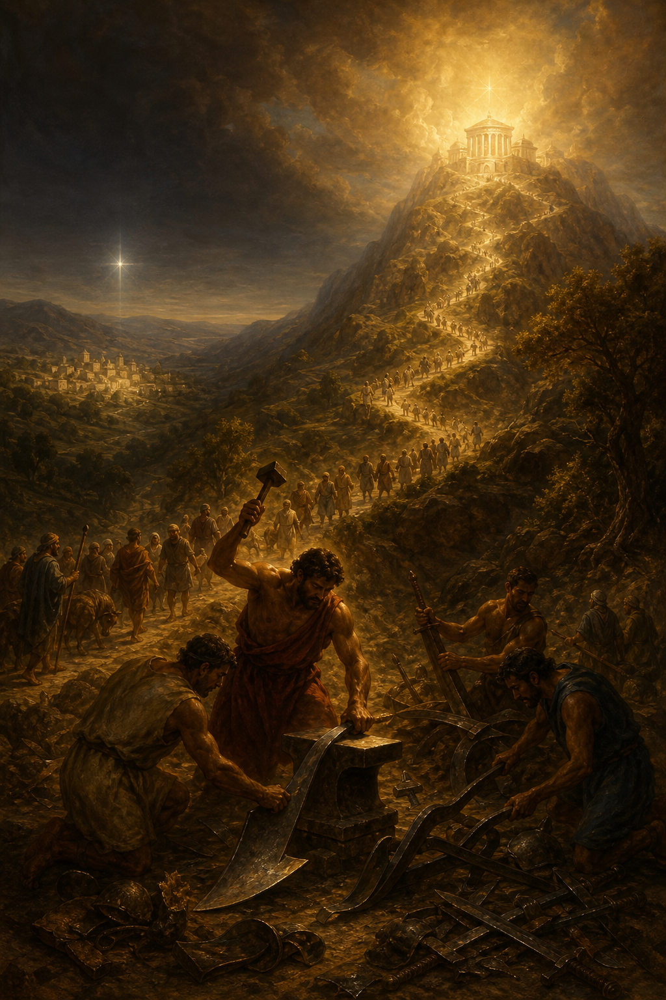

Old Testament · Book 33 of 39
Micah
A country prophet confronts the powerful cities for their corruption, names the unlikely village where a ruler will be born, and reduces true religion to three plain acts.
A prophet from a small Judean town takes on the corrupt power centers of Samaria and Jerusalem, pairing fierce indictments of oppression with some of Scripture's clearest promises of a coming ruler and a simple summary of what God actually wants from his people.
He hath shewed thee, O man, what is good; and what doth the LORD require of thee, but to do justly, and to love mercy, and to walk humbly with thy God?
What happens in Micah
Micah opens with judgment descending on both Samaria and Jerusalem, as the prophet laments the coming devastation while exposing the specific sins driving it: corrupt leaders who devour the poor like meat for the pot, prophets who sell comforting lies for a fee, and landowners who seize fields and houses from families who can't fight back. In the middle chapters this bleak picture suddenly opens onto a breathtaking vision of the future, nations streaming to Jerusalem to learn God's ways and beat their swords into plowshares, and a ruler coming out of tiny, overlooked Bethlehem whose origins are from ancient days, a prophecy quoted centuries later when wise men come asking where the Messiah would be born. God then puts Israel on trial, asking what he has ever done to exhaust them, and when the people respond by offering escalating sacrifices, Micah delivers the book's most famous line: God does not want burnt offerings or rivers of oil, he wants justice, mercy, and a humble walk with him. The book closes with the prophet's own anguish over a society where no one can be trusted, followed by a confident hope in God's pardoning mercy and faithfulness to his ancient promises.
Why it matters
Micah distills true religion down to something impossible to fake with ritual: justice toward others, mercy as a practiced habit, and humility before God. Its Bethlehem prophecy becomes one of the most directly fulfilled predictions in Scripture, and its closing meditation on a God who delights in mercy and casts sin into the depths of the sea remains one of the Bible's most hope-filled endings to a book of judgment.